前端技术组 姚冀锋
SSR是什么？
"传统的"SSR：页面由服务端直接返回给浏览器，路由为服务端路由，URL的变更会刷新页面。
下面这些方式哪些是“传统的”SSR？
"CSR"指页面在js加载完启用客户端渲染，异步获取数据，路由为客户端路由，URL变更不刷新页面。
现在业内所说的SSR，用服务端渲染首屏，首屏之后的路由由客户端控制。
机器配置：MacBook（2.6 GHz 六核Intel Core i7 16 GB 2400 MHz DDR4）
软件环境：React(16.11.0)，nodejs(12.13.1)，chrome(78.0.3904.97) 在网络面板中禁用缓存
样本节点：5000个节点的页面渲染
网络传输资源对比
SSR:
3 requests (index.html, vendor.js, main.js)
～600 KB transferred
CSR:
4 requests (index.html, vendor.js, main.js, cells.json)
～400 KB transferred
在Slow 3G场景下复盘过程：CSR
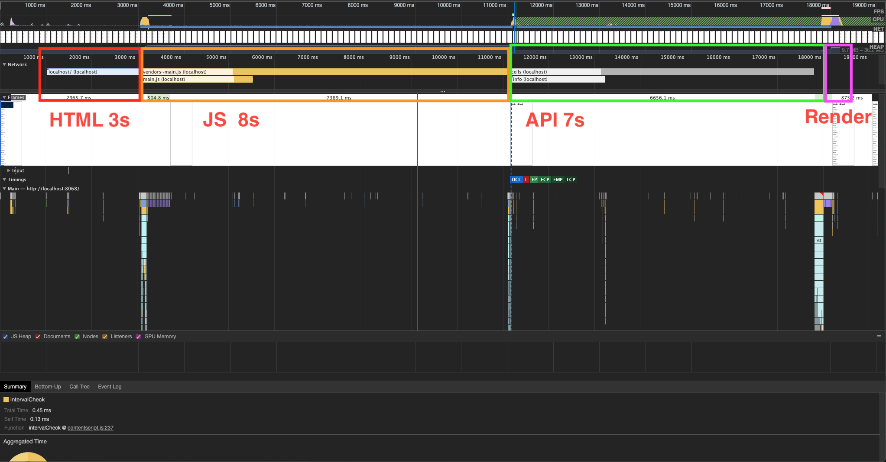在Slow 3G场景下复盘过程：SSR
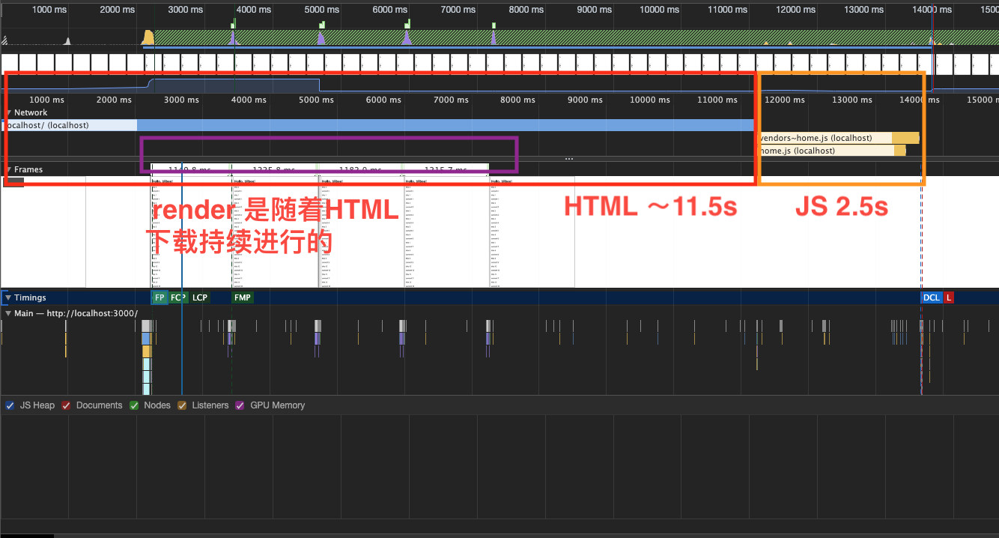在前端框架没有执行完之前，可看不可交互。可提升弱网环境下的读视图！
对SEO的支持
内容：搜索引擎与 SEO 行为间是一种良性的共生关系，比如很多优质的网站是用 Flash 或者 Ajax 做的，搜索引擎就无法很好的爬取和索引。
跳转链接：建议使用文字而不是flash、图片、Javascript等来显示重要的内容或链接，搜索引擎暂时无法识别Flash、图片、Javascript中的内容，这部分内容无法搜索到；仅在flash、Javascript中包含链接指向的网页，百度可能无法收录。
-- 《百度搜索引擎优化指南 2.0》
SEO支持：SSR VS CSR
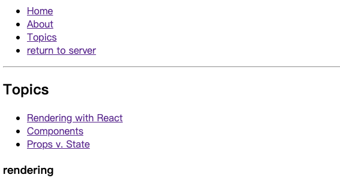使用CSR从服务端返回的html源码
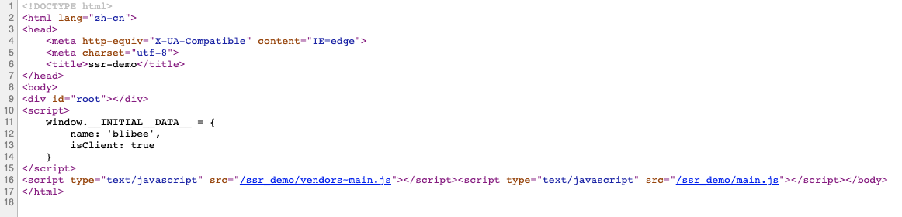使用SSR从服务端返回的html源码
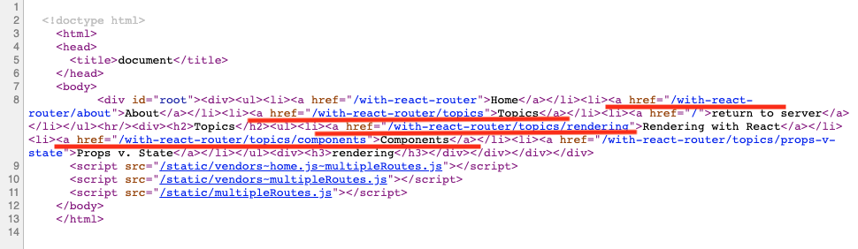需要做SEO的项目，可以使用基于SSR的技术方案。
思考下，哪些场景适合用SSR来做
为什么SSR这种很早就有的技术，现在重出江湖？
编写的Javascript代码可同时运行在浏览器及Node.js两套环境中
一个完整的ssr流程
import ReactDOMServer from 'react-dom/server';
//把React element 渲染成html字符串
ReactDOMServer.renderToString(element)
import ReactDOM from 'react-dom'
//与 render() 相同，但它用于在 ReactDOMServer 渲染的容器中
//对 HTML 的内容进行 hydrate 操作。React 会尝试在已有标记上
//绑定事件监听器。
ReactDOM.hydrate(element, container[, callback])
SSR生命周期和CSR的不同
| 生命周期/是否执行 | SSR | CSR |
|---|---|---|
| constructor | true | true |
| getDerivedStateFromProps | true | true |
| render | true | true |
| componentDidMount | false | true |
| shouldComponentUpdate | false | true |
| getSnapshotBeforeUpdate | false | true |
| componentDidUpdate | false | true |
| componentWillUnmount | false | true |
SSR中将数据传入组件
axios({
method: 'get',
url: URL
})
.then(response => {
const {data} = response;
const component = ReactDOMServer.renderToString(
<Client name={name} cells={data} isClient={false}/>
);
//...
SSR中将数据写入页面，作为CSR的初始数据
<script>window.__INITIAL__DATA__ = ${JSON.stringify({name, cells: data})}</script>
CSR中使用预置数据，进行初始化
ReactDOM.hydrate(
<Client name={window.__INITIAL__DATA__.name} cells={window.__INITIAL__DATA__.cells} isClient={true}/>,
document.getElementById('root')
);
更加优雅的方式，是在组件中定义方法
class Client extends React.Component {
//...
async asyncData (context) {
const {data} = await axios({
method: 'get',
url: URL
});
return data;
}
//...
} 服务端渲染的时候执行该方法进行数据的注入
const ActiveComponent = getComponent(Routes, ctx.path)
const serverData = ActiveComponent.asyncData ?
await ActiveComponent.asyncData(ctx) : {}
const component = ReactDOMServer.renderToString(
<ActiveComponent {...serverData}/>
);
为啥不用React自己的生命周期钩子？
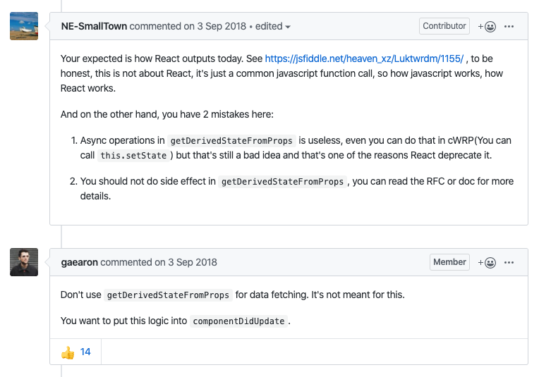StaticRouter VS BrowserRouter
StaticRouter是无状态的路由，适合服务端渲染使用。使用context，判断跳转。
BrowserRouter是有状态的路由，使用html5 history API，在URL的变化时，同步UI的渲染。
机器配置：MacBook（2.6 GHz 六核Intel Core i7 16 GB 2400 MHz DDR4）
软件环境：React(16.11.0)，nodejs(12.13.1)，autocannon (4.4.0)
样本：[1000, 2000, 3000, 5000]个节点的页面渲染，和相同数据的API接口返回
方法：并发的数量100，请求5s。观测qps和服务器延迟
QPS
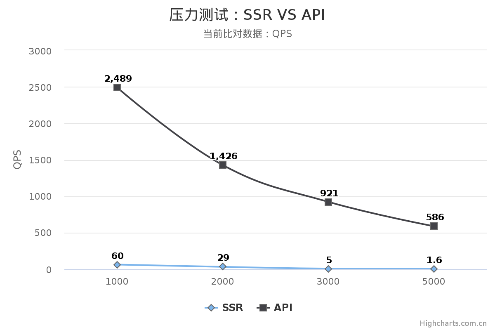服务器延迟(ms)
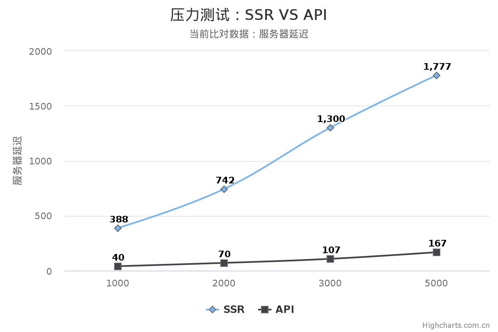使用stream
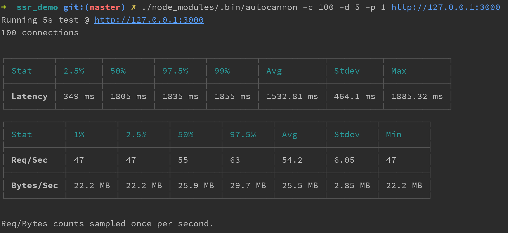qps平均54.2，提高35倍，服务器延迟平均1532，降低14%。
使用react-component-caching之后的效果
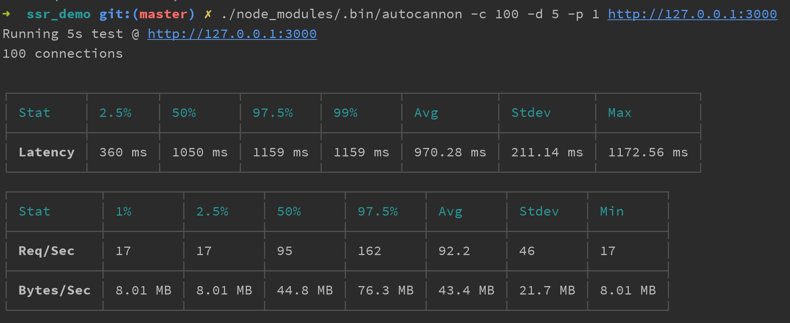qps平均92.2 提高56倍，服务器延迟平均970.28，降低46%。
静态化：
将动态生成的网页静态化，生成HTML文件。
使用静态化之后的效果
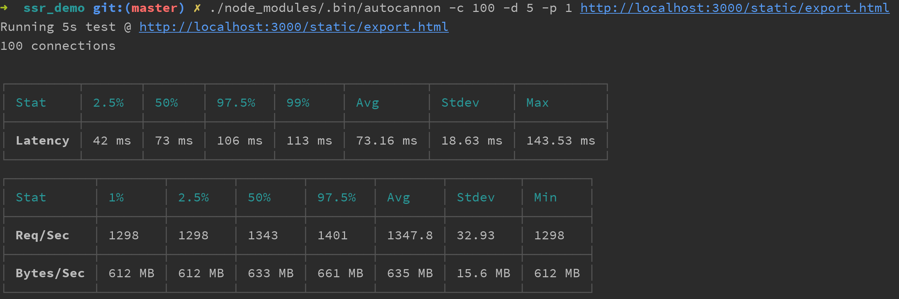qps平均1347 提高～900倍，服务器延迟平均73，降低96%。
| 名称 | 特点 | github star |
|---|---|---|
| Next | minimalistic framework for ssr applications | 42.6k |
| Razzle | HMR,same CSS setup | 8.2k |
| React Server | by Redlfin | 3.9k |
| beidou | By alibaba 高并发方案，支持自动路由 | 2.5k |
| ykfe（egg-react-ssr） | Egg + React + SSR 应用骨架 | 674 |
star统计时间：2019年11月22日
电商活动页面投放系统
场景：
页面访问量大，地域差距大
对首屏的展示速度要求高
低频使用，资源缓存命中率低
存在弱网环境的投放
模板维护系统，维护模板和数据schema
内部运营平台，使用schema动态生成表单，运营同学使用该系统录入活动数据。
使用SSR静态化技术并将发布至CDN
动态化跟用户相关的内容